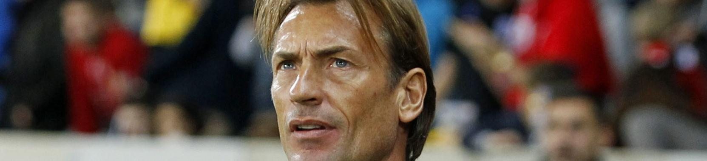

LE LOSC MET UN TERME À SA COLLABORATION AVEC HERVÉ RENARD!

Le LOSC annonce sa décision de mettre fin de manière amiable à sa collaboration avec Hervé Renard. Hervé Renard n’est ainsi plus l’entraîneur du LOSC dont l’effectif professionnel et la préparation seront conduits ces prochains jours par l’un de ses adjoints, Patrick Collot, et les membres du staff technique.
Après 13 journées de Ligue 1, le LOSC pointe à la seizième place du classement ; une position périlleuse et assurément pas à la hauteur des objectifs du club. Une position qui n’apparaît par ailleurs pas en phase avec les capacités et le potentiel de l’effectif professionnel qui, au-delà des résultats bruts, n’a pas trouvé avec Hervé Renard son équilibre et sa dynamique.
Absolument convaincu du talent présent au sein de l’effectif et de la pertinence des orientations prises cet été, Michel Seydoux prendra rapidement les décisions qui viseront à revoir le management de l’effectif professionnel pour reconstruire une dynamique positive et remettre le projet lillois sur la voie du succès, avec l’objectif à court terme d’obtenir des effets concrets et rapides sur le jeu et les résultats de l’équipe.
Si la collaboration avec l’entraîneur Hervé Renard s’achève, de manière évidente et malheureuse, sur un constat d’échec partagé qui aboutit à cette annonce aujourd’hui, le LOSC et l’ensemble de ses collaborateurs ont sincèrement apprécié la relation avec l’homme, à qui ils souhaitent performance et réussite dans la suite de sa carrière.
Hervé Renard a également tenu à adresser un message de remerciement et ses meilleurs encouragements aux supporters et salariés du LOSC.